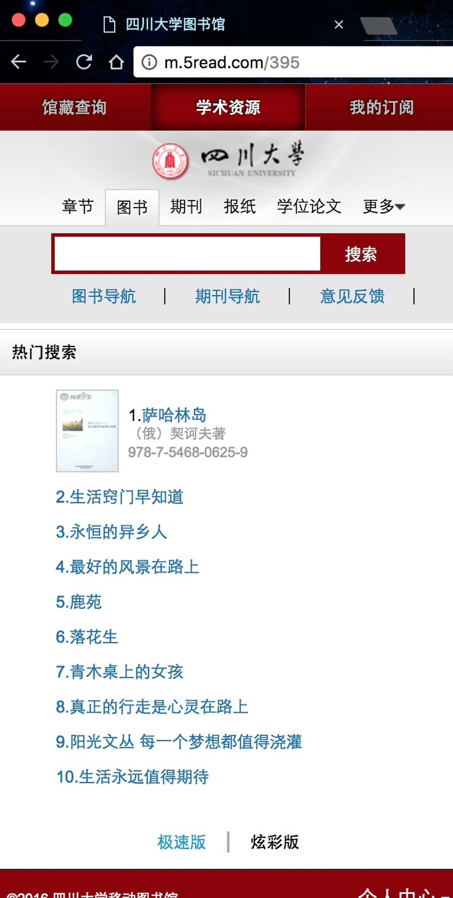
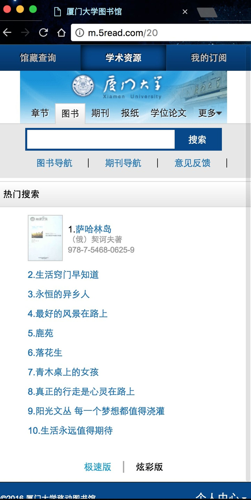
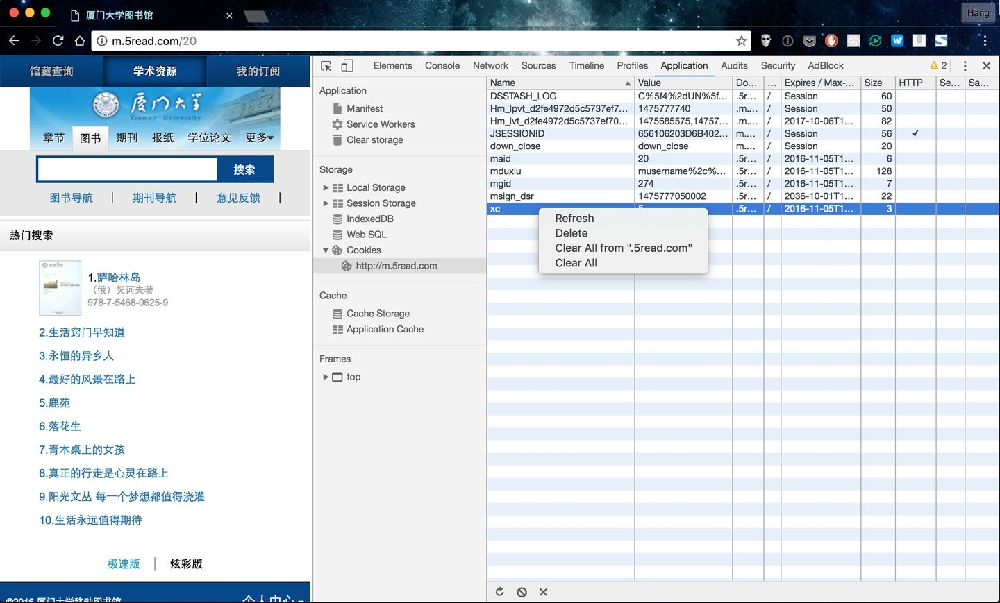
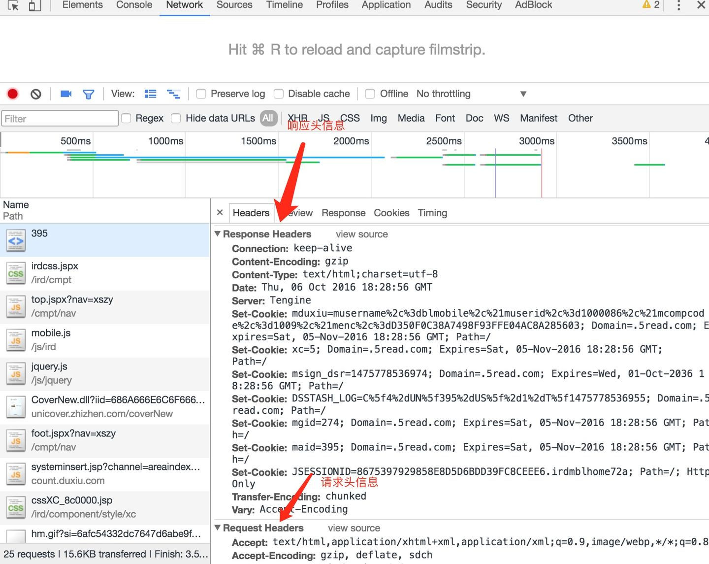
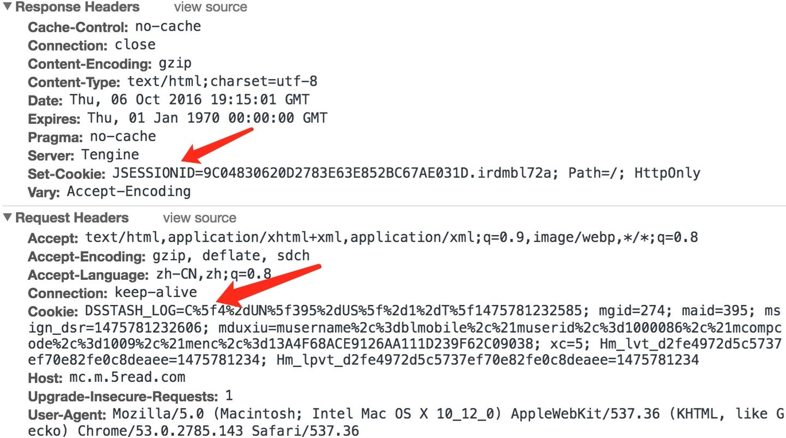
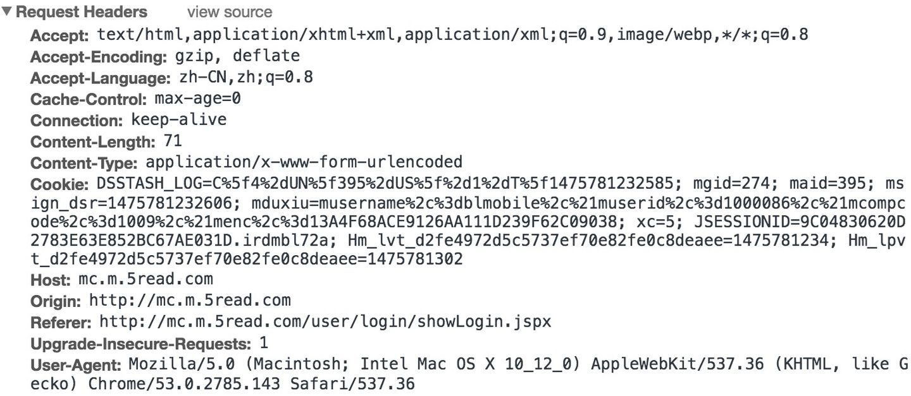
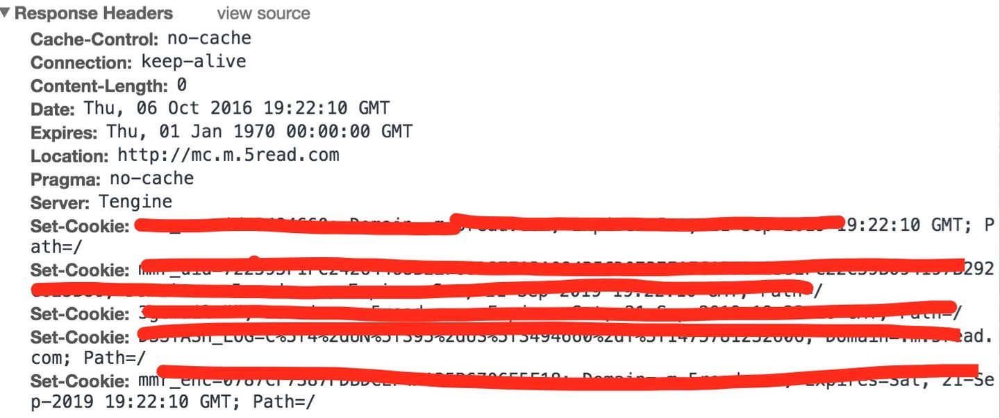
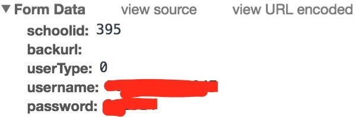

本文详细讲述如何模拟登录某某大学图书馆系统。为什么说是某某大学？往下看了就知道了 😉
对于爬虫程序，如果需要抓取的页面，需要登录后才能访问，这时一般就需要进行模拟登录了。由于最近需要抓取登录四川大学图书馆后的一些信息，所以以此为例详细说明整个分析和编码过程。
总的来说，对于一般系统的模拟登录分为三大步骤：
- 分析页面，得到登录 URL 和所需要传递的数据
- 通过程序向所得 URL 发送数据
- 根据服务端的响应判断是否登录成功，若登录成功，则保存返回的 cookie
只要得到了 cookie，当需要抓取登陆后才能访问的页面时，只需要发送 HTTP 请求时，在 HTTP Header 带上 cookie 即可。
对于写爬虫程序，还有一些小技巧（其实目前就总结出来一个）：
- 能抓取手机站就抓取手机站，因为手机网站一般比较容易
1. 分析四川大学移动图书馆 🔗
1.1. 分析 🔗
图书馆系统有一个手机网站，所以优先选择手机站作为目标。其链接是 http://m.5read.com/395 。
首先看到这个链接的时候，我也是比较奇怪，毕竟这个域名就比较奇怪，川大图书馆系统手机版的域名为什么不是
scu.edu.cn
的子域名，而且域名的 PATH 部分为什么是 395。
域名打开后是 四川大学移动图书馆：

然后我把 395 去掉，直接输入了 http://m.5read.com，打开也是川大图书馆首页。但如果我在另一个没有打开过该链接的浏览器中打开 http://m.5read.com/ ，则是 默认单位移动图书馆：

这个时候就得出两个猜测：
- 一是 URL 中的
395是学校的编号 - 二是打开
http://m.5read.com/395后，客户端肯定会生成对应的 cookies ，表示当前客户端访问的是395这所大学的图书馆系统
为了验证第一个猜测，我们把 395 改为任意一个其他数字。这样大概有两种情况，如 http://m.5read.com/1则提示 对不起，还没有开通手机业务！，http://m.5read.com/20 则是厦门大学的图书馆系统，见下图：

接下来再看看是不是生成了对应的 cookie 信息。在 Chrome 的 开发者工具 -> Application 的左侧菜单栏选中 Cookies，然后在右侧选中某个 cookie，并点击右键，选择 Clear All 清除所有 cookies。也可以直接在左侧菜单栏 Cookies 展开后的域名上，点击右键，选择 clear。

因为我的目的是模拟模拟登录四川大学图书馆系统，所以我还是先访问 http://m.5read.com/395，再来看看 cookies：

可以看到，的确生成了 cookies，结构和之前厦门大学类似。为了弄清楚 cookies 是怎么生成的，接下来要查看的就是 HTTP 请求的详细内容了：

可以发现，Response Headers 里面有很多 Set-Cookie 字段。请求头中没有特殊的字段。所以访问 http://m.5read.com/395 的大致流程是：
- 浏览器（客户端）发起 HTTP 请求，请求的 URL 地址是
http://m.5read.com/395 - 服务端接收到请求，并根据 URL 中的
395参数，分析得出访问的是四川大学移动图书馆 - 服务端根据
395在响应头信息中加入对应的set-cookie字段 - 浏览器接收到服务端的响应，并根据响应头中的
Set-Cookie字段，生成对应的 cookies
如果要访问 四川大学移动图书馆 的其他页面，必然也要带上这些 cookies，不然系统无法区分访问的是那个大学的移动图书馆。
1.2 结论 🔗
根据以上分析，得出结论如下：
http://m.5read.com/395表示某个学校移动图书馆的首页，URL 中的395参数表示学校代码- 访问不同学校的移动图书馆首页，会生成对应的 cookies
- 当需求访问某学校移动图书馆系统的其他页面时，必须带上访问首页时生成的 cookies
1.3 代码 🔗
我用的 Node.js 的 request 这个包来发送 HTTP 请求。在使用前，需要先安装： npm install request --save。
具体的代码如下：
const request = require('request');
const options = {
url: 'http://m.5read.com/395'
};
request(options, (error, response, body) => {
if (error) {
console.error('访问首页失败: \n', error);
return { error };
}
const cookie = response.headers['set-cookie'];
console.log('cookie:\n ', cookie);
});
程序运行后，如果没出错，则会以标准输出的形式输出 cookies：
$ node index.js
cookie:
[ 'JSESSIONID=E2741DEB3D5296EF15A1F8914E92EE77.irdmblhome72b; Path=/; HttpOnly',
'DSSTASH_LOG=C%5f4%2dUN%5f395%2dUS%5f%2d1%2dT%5f1475793477551; Domain=.5read.com; Path=/',
'mgid=274; Domain=.5read.com; Expires=Sat, 05-Nov-2016 22:37:57 GMT; Path=/',
'maid=395; Domain=.5read.com; Expires=Sat, 05-Nov-2016 22:37:57 GMT; Path=/',
'msign_dsr=1475793477609; Domain=.5read.com; Expires=Wed, 01-Oct-2036 22:37:57 GMT; Path=/',
'mduxiu=musername%2c%3dblmobile%2c%21muserid%2c%3d1000086%2c%21mcompcode%2c%3d1009%2c%21menc%2c%3d26546915E1F9381939EA005CB06A28F6; Domain=.5read.com; Expires=
Sat, 05-Nov-2016 22:37:57 GMT; Path=/',
'xc=6; Domain=.5read.com; Expires=Sat, 05-Nov-2016 22:37:57 GMT; Path=/' ]
2. 分析登录页面 🔗
2.1 分析 🔗
接下来需要寻找的就是对应的登录页面。登录页面的 URL是 http://mc.m.5read.com/user/login/showLogin.jspx。
打开该页面，再看看 HTTP 请求：

可以发现，发送请求头中的 Cookie 为
DSSTASH_LOG=C%5f4%2dUN%5f395%2dUS%5f%2d1%2dT%5f1475781232585; mgid=274; maid=395; msign_dsr=1475781232606; mduxiu=musername%2c%3dblmobile%2c%21muserid%2c%3d1000086%2c%21mcompcode%2c%3d1009%2c%21menc%2c%3d13A4F68ACE9126AA111D239F62C09038; xc=5; Hm_lvt_d2fe4972d5c5737ef70e82fe0c8deaee=1475781234; Hm_lpvt_d2fe4972d5c5737ef70e82fe0c8deaee=1475781234
Host:mc.m.5read.com
其中不包含 JSESSIONID，而响应头中返回了一个新的 Set-Cookie:JSESSIONID=9C04830620D2783E63E852BC67AE031D.irdmbl72a; Path=/; HttpOnly 字段。
JSESSIONID 是 Tomcat 中的 SESSIONID，主要作用是用来标识当前请求对应的用户。SESSIONID 是唯一的。当客户端访问服务器时，服务器（这里是 Tomcat）会生成一个唯一的 SESSIONID（这里是 JSESSIONID），并返回给客户端，客户端将 SESSIONID 保存在 cookie 中。之后客户端再发送 HTTP 请求时，就会在 HTTP Headers 中以 cookie 的形式发送 SESSIONID 到服务器。服务器接收到 SESSIONID 后，就可以根据 SESSIONID 来判断是哪一个客户端发送的请求。
对于该图书馆系统，访问首页
http://m.5read.com/395
和访问登录页
http://mc.m.5read.com/user/login/showLogin.jspx
是生成的不同的 JSESSIONID，说明该系统认为访问这两个页面是不同的用户，即使事实上是同一个用户访问的。
从 JSESSIONID 的作用来看，JSESSIONID 和用户登录没有直接关系。所以模拟登录的时候，依旧只需要使用访问首页时生成的 cookie 即可。怎么验证呢？可以在 Chrome 开发者工具的 Application 面板中，找到 cookie 里面的 JSESSIONID 字段，并删除，然后刷新页面，会发现又生成了另一个新的 JSESSIONID。所以不论 JSESSIONID 是什么值，我们都可以登录。所以 JSESSIONID 不会影响模拟登录。
2.2 结论 🔗
- 进行模拟登录，和用户登录有关的 cookie 信息是访问首页时生成的 cookie
- 访问首页和登录页面时，
JSESSIONID虽然会发生变化，但JSESSIONID并不会影响用户通过账号和密码进行认证
2.3 代码 🔗
这部分没有直接的代码。但因为接下来要进行模拟登录，所以肯定又会再写一个 request 发送 HTTP 请求，所以现在可以把之前的代码结构优化一下：
// login.js
const request = require('request');
const errorText = {
account: '用户名或密码错误',
emptyPassword: '借阅证密码不能为空',
emptyNumber: '借阅证号不能为空',
};
const url = {
// 图书馆手机首页
home: 'http://m.5read.com/395',
// 登陆 URL
login: 'http://mc.m.5read.com/irdUser/login/opac/opacLogin.jspx',
};
const regexp = {
number: number: /^\d+$/,
};
/**
* 获取 cookie
* @method getCookie
* @param {object} options HTTP请求设置信息
* @param {Function} callback
* @return {string} {error, HTTP响应中的cookie}
*/
const getCookie = (options, callback) => {
request(options, (error, response) => {
if (error) {
return callback({ error, code: 1018 });
}
const cookie = response.headers['set-cookie'].join();
return callback(null, cookie);
});
};
getCookie({url: url.home}, (error, resHome) => {
if (error) {
console.error('获取首页 cookie 失败: \n', error);
return false;
}
const cookieHome = resHome.cookie;
console.log('首页cookie:\n ', cookieHome);
});
3. 模拟登录 🔗
3.1 分析 🔗
前面做了那么多分析，主要就是为了登录的时候，发送正确的 cookie。在最终模拟登录之前，还需要做一点分析。
现在需要做的就是，通过学号和密码登录，并继续查看 HTTP 请求，找到登录认证的接口,并分析请求头和响应头。
下面是我输入正确的学号和密码之后，HTTP 请求：
请求头：

响应头：

数据：

从请求头中可以发现，用户登录的 URL 是 http://mc.m.5read.com/irdUser/login/opac/opacLogin.jspx，HTTP Method 是 POST，需要传递的数据是 schoolid=学校编号&backurl=&userType=0&username=xxxxxx&password=xxx，并且是通过表单的方式传递的数据：Content-Type: application/x-www-form-urlencoded。当然，发送 HTTP 请求时，请求头中还有 cookie。除了 JSESSIONID 是新生成之外，其余 cookie 都是访问首页时生成的。
登录成功后，再去查看 cookie ，就会发现 cookie 已经更新为响应头中 set-cookie 中的字段和值了。
3.2 结论 🔗
URL: http://mc.m.5read.com/irdUser/login/opac/opacLogin.jspx
Method: POST
Content-Type:application/x-www-form-urlencoded
Cookie: ... // 访问首页时生成的 cookie
Form Data: {
schoolid:395, // 学校代码
backurl: '' // 登录后跳转的 URL
userType: 0, // 登录时的账号类型，0 表示学号密码登录
username: 000000000000, // 学号
password: 000000, // 密码
}
3.3 代码 🔗
登录模块的完整代码如下：
// login.js
const request = require('request');
const errorText = {
account: '用户名或密码错误',
emptyPassword: '借阅证密码不能为空',
emptyNumber: '借阅证号不能为空',
};
const schoolid = 395;
const url = {
// 图书馆手机首页
home: 'http://m.5read.com/395',
// 登陆 URL
login: 'http://mc.m.5read.com/irdUser/login/opac/opacLogin.jspx',
};
const regexp = {
number: /^\d+$/,
};
/**
* 获取 cookie
* @method getCookie
* @param {object} options HTTP请求设置信息
* @param {Function} callback
* @return {string} {error, HTTP响应中的cookie}
*/
const getCookie = (options, callback) => {
request(options, (error, response) => {
if (error) {
return callback({ error, code: 1018 });
}
const cookie = response.headers['set-cookie'].join();
return callback(null, cookie);
});
};
/**
* 模拟登录操作
* @method doLogin
* @param {object} options HTTP 请求信息
* @param {string} cookie cookie
* @param {Function} callback 回调函数
* @return {object} {error, 登录成功后的cookie}
*/
const doLogin = (options, callback) => {
request(options, (error, response, body) => {
if (error) {
return callback({ error });
}
if (body.indexOf(errorText.account) !== -1) {
return callback({
error: errorText.account,
code: 1019,
});
}
if (body.indexOf(errorText.emptyPassword) !== -1) {
return callback({
error: errorText.emptyPassword,
code: 1020,
});
}
if (body.indexOf(errorText.emptyNumber) !== -1) {
return callback({
error: website.errorText.emptyNumber,
code: 1021,
});
}
const cookieLogined = response.headers['set-cookie'].join();
return callback(null, cookieLogined);
});
};
/**
* 模拟登录
* @method login
* @param {string} number 学号（借阅证号）
* @param {string} password 密码
* @param {Function} callback 回调函数
* @return {object} 登录成功后的cookie
*/
const login = (number, password, callback) => {
// 验证 number
if (!regexp.number.test(number)) {
return callback({ code: 1016, error: '登录移动图书馆学号格式错误' });
}
// 验证 password
if (!regexp.number.test(password)) {
return callback({ code: 1017, error: '登录移动图书馆密码格式错误' });
}
// 获取图书馆首页 cookie
getCookie({ url: url.home }, (errHome, cookieHome) => {
if (errHome) {
console.log('获取图书馆首页 cookie 失败: \n', errHome);
return callback({
code: errHome.code,
error: errHome.error,
});
}
console.log('首页cookie:\n ', cookieHome);
// 模拟登录
const options = {
url: url.login,
form: {
schoolid: schoolid,
backurl: '',
userType: 0,
username: number,
password,
},
headers: {
Cookie: cookieHome,
'Content-Type': 'application/x-www-form-urlencoded',
},
method: 'POST',
};
doLogin(options, (errLogin, cookieLogined) => {
if (errLogin) {
console.log('登录失败: \n', errLogin);
return callback({
code: errLogin.code,
error: errLogin.error,
});
}
console.log('登录成功后的 cookie:\n ', cookieLogined);
return callback(null, cookieLogined);
});
});
};
module.exports = login;
4. 抓取借阅信息 🔗
为了验证登录后的 cookie 是不是最终正确，访问一下需要登录后才能访问的页面即可。
所以下面就来抓取借阅信息。为了解析 HTML 文本，我们还需要用到 cheerio 这个包。cheerio 就相当于是服务端的 jQuery，可以像使用 jQuery 选择器一样从一个 HTML 文本中取出想要的内容。
新建一个 get_books.js 文件，添加如下代码：
// get_books.js
const request = require('request');
const cheerio = require('cheerio');
const login = require('./login');
const url = {
books: 'http://mc.m.5read.com/cmpt/opac/opacLink.jspx?stype=1',
}
const errorText = {
cookieTips: '请确认您的浏览器Cookie开启和正常访问移动图书馆首页'
};
const number = '0000000000000'; // 学号（借阅证号）
const password = '000000'; // 密码
const fetchBooks = (cookie, callback) => {
const options = {
url: url.books,
headers: {
Cookie: cookie,
},
};
request(options, (error, response, body) => {
if (error) {
console.log('获取图书借阅列表失败: ', error);
return callback({
code: 1025,
error: '获取图书借阅列表失败',
detail: error,
});
}
console.log('response.statusCode: ', response.statusCode);
if (response.statusCode !== 200) {
return callback({
code: 1026,
error: '获取图书借阅列表失败',
detail: response,
});
}
return callback(null, body);
});
};
const parseBooks = (html, callback) => {
if (html.indexOf(errorText.cookieTips) !== -1) {
console.log(errorText.cookieTips);
return {
code: 1027,
error: '移动图书馆系统 cookie 信息过期，请重新登录',
detail: html,
};
}
const $ = cheerio.load(html, {
ignoreWhitespace: true,
xmlMode: false,
lowerCaseTags: false,
});
const domBooks = $('.boxBd').find('.sheet');
const booksNumber = domBooks.length; // 借阅数量
// console.log(domBooks.length);
const books = [];
domBooks.each(function () {
const barCodeValue = $(this).find('td').eq(5).find('form input')
.eq(0)
.attr('value');
const borIdValue = $(this).find('td').eq(5).find('form input')
.eq(1)
.attr('value');
books.push({
// 作者
author: $(this).find('td').eq(0).text(),
// 书名
name: $(this).find('td').eq(1).text(),
// 应还日期
expiredate: $(this).find('td').eq(2).text(),
// 分馆
libraryBranch: $(this).find('td').eq(3).text(),
// 索书号
number: $(this).find('td').eq(4).text(),
borId: borIdValue,
barCode: barCodeValue,
});
});
return callback(null, {
booksNumber,
books,
});
};
login(number, password, (error, cookie) => {
if (error) {
return console.log(error);
}
// 获取借阅列表页面html
fetchBooks(cookie, (errFetch, resFetch) => {
if (errFetch) {
return console.log(errFetch);
}
// 解析借阅列表html
parseBooks(resFetch, (errParse, resParse) => {
if (errParse) {
console.log('errParse: ', errParse);
return console.log(errParse);
}
return console.log(null, { books: resParse });
});
});
});
安装 npm install cheerio --save，将 number 和 password 改为正确的借阅证号和密码就可以登录成功，并获取到该用户的借阅列表了。
运行结果如下：
$ node get_books.js
首页cookie:
JSESSIONID=6EA8121AB1E4B3045A331198321F8ADC.irdmblhome72a; Path=/; HttpOnly,DSSTASH_LOG=C%5f4%2dUN%5f395%2dUS%5f%2d1%2dT%5f1475865139485; Domain=.5read.com; Path=/,mgid=274; Domain=.5read.com; Expires=Sun, 06-Nov-2016 18:32:19 GMT; Path=/,maid=395; Domain=.5read.com; Expires=Sun, 06-Nov-2016 18:32:19 GMT; Path=/,msign_dsr=1475865139507; Domain=.5read.com; Expires=Thu, 02-Oct-2036 18:32:19 GMT; Path=/,mduxiu=musername%2c%3dblmobile%2c%21muserid%2c%3d1000086%2c%21mcompcode%2c%3d1009%2c%21menc%2c%3d26A35FCD85F5A5677706DC7CE503113A; Domain=.5read.com; Expires=Sun, 06-Nov-2016 18:32:19 GMT; Path=/,xc=6; Domain=.5read.com; Expires=Sun, 06-Nov-2016 18:32:19 GMT; Path=/
登录成功后的 cookie:
xxxxxxxxxxxxxxxxxxxxxxxxxxxxxxxxxxxxxxxxxxxx
response.statusCode: 200
{ booksNumber: 2,
books:
[ { author: '李刚',
name: '疯狂Swift讲义',
expiredate: '20161010',
libraryBranch: 'JZLKS',
number: 'TP312SW/4072',
borId: 'U13014748',
barCode: '90577318' },
{ author: '杨宏焱',
name: 'iOS 8 Swift编程指南',
expiredate: '20161010',
libraryBranch: 'JZLKS',
number: 'TP312SW/4739',
borId: 'U13014748',
barCode: '90597040' },
]
}
到目前为止，模拟登录的程序就完成了，并且成功获取到了用户的借阅列表。
由于很多很多大学的移动图书馆都使用同一个系统，所以这个程序具有通用性，所以本文的标题是《模拟登录某某大学图书馆系统》。
不信你试试，说不定就有你的学校。
Github Issue: https://github.com/nodejh/nodejh.github.io/issues/6